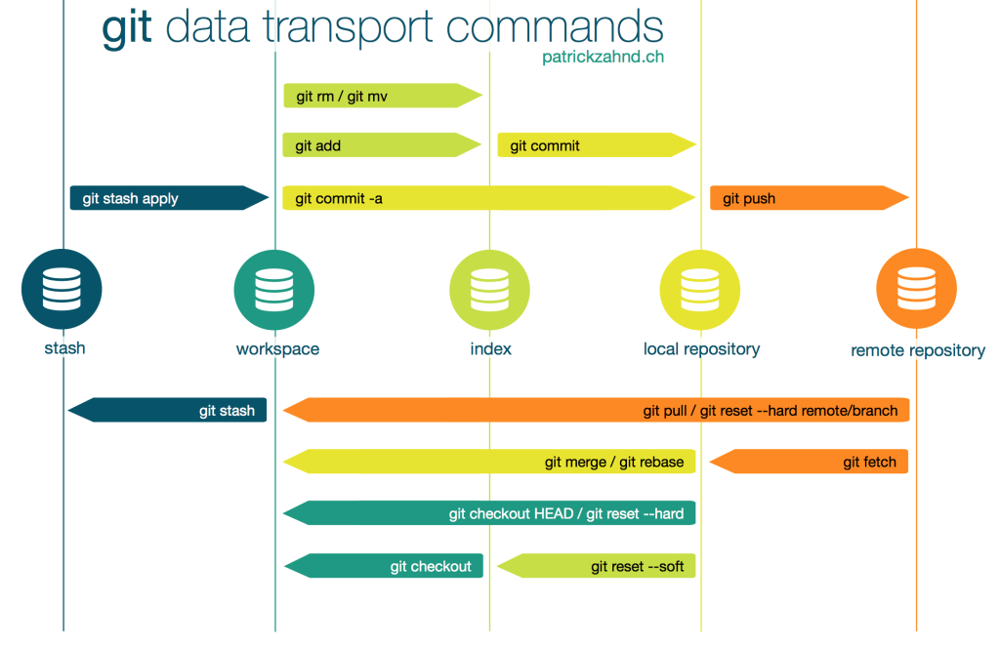
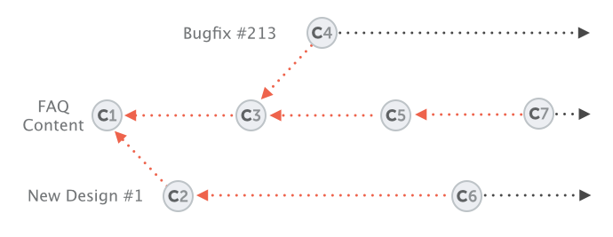

# Srodowiska i narzedzia wytwarzania oprogramowania - wyklad 1 ### poniedzialek, __8:30-10:00__, P/0/01 - 10.10.2016, 24.10.2016, 07.11.2016, ..., 23.01.2017 - 17.10.2016, ~~wyklad, cw. gr. 1, 2, 4~~, konferencja & szkolenie D-Wave - 31.10.2016, ~~wyklad, cw. gr. 1-5~~, godz. rektorskie #### cwiczenia: zaliczenia na podstawie aktywnosci #### wyklad: nieobowiazkowy, egzamin (~6-7.02.2017) 2-3 zadania praktyczne --- ### Program kursu 1. Modele wytwarzania oprogramowania, moduly, sciezki krytyczne 2. <span style="background-color: #FFFF00">Rozproszone systemy kontroli wersji, podstawy gita</span> 3. Zdalne repozytoria gita: GitHub, BitBucket, GitLab 4. Praca grupowa z wykorzystaniem gita, galezie, git-flow 5. Tworzenie dokumentacji, GitHub Flavoured Markdown, wiki 6. Gerrit, recenzowanie kodu, dyskusja nad zmianami 7. Automatyzacja kompilacji: bash & make, maketools, maven, ant... 8. Systemy ciaglej integracji (CI/CD), Travis CI, Jenkins, automatyzacja testow 9. 'Zwinne' metodyki wytwarzania oprogramowania 10. Wirtualizacja srodowiska testowego: kontenery, Docker, izolacja aplikacji 11. Zintegrowane platformy zarzadzania projektami informatycznymi, ekosystem Atlassian --- ### Systemy kontroli wersji 1. stare podejscie: centralne zdalne repozytorium (SVN, CVS, ...) 2. nowy (sprytniejszy) sposob: rozproszony system (git, Hg, ...) 3. <span style="background-color: #FFFF00">git</span> - zaprojektowany w 2005r. przez L. Torvaldsa do kontroli wersji kodu jadra Linuxa: > _Linus Torvalds on git, Google, 2007_ - obecnie jest **standardowym** narzedziem programistycznym - zalety: - przechowuje (lokalnie) pelna informacje o calej historii projektu - szybszy i lzejszy od konkurencji Hg, Bzr, SVN - trzeba sie postarac, zeby przypadkowo 'uszkodzic' repozytorium gita - literatura - S. Chacon, _Pro Git_, <https://git-scm.com/book/en/v2> - M. McQuaid, _Git in Practice_, <https://www.manning.com/books/git-in-practice> --- ### Jak dziala git? - _roznice_ vs. _migawki_ <img src="./old.png" width="350"> vs. <img src="./new.png" width="350"> - _lokalne zmiany_ --- ### Podstawy gita - Sprawdzamy czy git jest zainstalowany ```git $ git --version $ git version 2.10.1 ``` jesli nie to instalujemy (<span style="background-color: #FFFF00">wersje > 2.8.0</span>) przez ```git $ sudo add-apt-repository ppa:git-core/candidate $ sudo apt-get update $ sudo apt-get install git ``` *Inna opcja*: kompilujemy zrodlo `git-2.10.1.tar.gz` wg. instrukcji w pliku `INSTALL`. - Konfigurujemy gita ```git $ git config --global user.name "Your Name" $ git config --global user.email "youremail@domain.com" ``` Ustawienia mozna sprawdzic przez polecenie `git config --list` lub bezposrednio w pliku `~\.gitconfig` --- ### Podstawy gita - Ustawiamy opcje zapamietania hasla np. na 7200s ```git $ git config --global credential.helper "cache --timeout=7200" $ git config --global credential.helper store ``` - Ustawiamy domyslny edytor ```git $ git config --global core.editor "nano" ``` - Inicjujemy nowe lokalne repozytorium ```git $ mkdir ~/projekt1 $ cd ~/projekt1 $ git init Initialized empty Git repository in ~/projekt1/.git/ ``` ```git $ ls -a . .. .git ``` --- ### Podstawy gita - Dodajemy liste ignorowanych plikow ```git $ cat ~/projekt1/.gitignore *.[oa] !lib.a *~ build/ ``` - Sprawdzamy (<span style="background-color: #FFFF00">jak najczesciej!</span>) aktualny stan repozytorium ```git $ git status On branch master Initial commit nothing to commit (create/copy files and use "git add" to track) ``` --- ### Dodawanie zmian do repozytorium i ich opis - Dodajemy dwa pliki tekstowe do katalogu `projekt1` ```git $ cd ~/projekt1 $ echo '0123' > testN.txt $ echo 'abcd' > testL.txt ``` ```git $ git status On branch master Initial commit Untracked files: (use "git add <file>..." to include in what will be committed) testL.txt testN.txt nothing added to commit but untracked files present (use "git add" to track) ``` - Przygotowujemy pierwsza 'paczke' zmian i umieszczamy ja w 'poczekalni' (_index_, _stagging area_) ```git $ git add testN.txt ``` --- ### Dodawanie zmian do repozytorium i ich opis --- ### Dodawanie zmian do repozytorium i ich opis - Sprawdzamy stan repozytorium ```git $ git status On branch master Initial commit Changes to be committed: (use "git rm --cached <file>..." to unstage) new file: testN.txt Untracked files: (use "git add <file>..." to include in what will be committed) testL.txt ``` - Akceptujemy zmiany i dodajemy wpis do repozytorium ```git $ git commit -m 'Add first txt file with a sequence of numbers.' [master (root-commit) 85edbc5] Add first file with a sequence of numbers. 1 file changed, 1 insertion(+) create mode 100644 testN.txt ``` --- ### Dodawanie zmian do repozytorium i ich opis - Jeszcze raz sprawdzamy stan repozytorium ```git $ git status On branch master Untracked files: (use "git add <file>..." to include in what will be committed) testL.txt nothing added to commit but untracked files present (use "git add" to track) ``` --- ### Struktura repozytorium gita ```git $ ls -a ~/projekt1 . .. .git .gitignore testL.txt testN.txt ``` ```git $ cd .git && ls -a . HEAD description info refs .. branches hooks logs COMMIT_EDITMSG config index objects ``` --- ### Podstawowy cykl gita --- ### Wazne polecenia - Przegladanie historii repozytorium ```git $ git log commit 85edbc56ee3910b08c23ac134a221669d5ae65f7 Author: tjel <tomek.jelinski@gmail.com> Date: Fri Oct 07 14:16:20 2016 +0200 Add first file with a sequence of numbers. ``` - Operacje na plikach - Usuwanie ```git $ git rm plik ``` - Zmiana nazwy ```git $ git mv plik1 plik2 ``` --- ### Jak sie obchodzic z gitem? --- ### Jak nie nalezy robic? --- ### Zdalne repozytoria: [GitHub](http://github.com) , BitBucket, GitLab,... --- ### Zdalne repozytoria: [GitHub](http://github.com) , BitBucket, GitLab,... - Dodajemy zdalne repozytorium ```git $ git remote add origin https://github.com/tjel/projekt1.git $ git remote --verbose ``` - Wysylamy zmiany (przez https, ssh, git) ```git $ git push [--set-upstream origin master] Counting objects: 6, done. Delta compression using up to 4 threads. Compressing objects: 100% (3/3), done. Writing objects: 100% (6/6), 510 bytes | 0 bytes/s, done. Total 6 (delta 0), reused 0 (delta 0) To https://github.com/tjel/projekt1.git * [new branch] master -> master Branch master set up to track remote branch master from origin. ``` i pobieramy zmiany ze zdalnego repozytorium ```git $ git pull Already up-to-date. ``` --- ### Synchronizacja ze zdalnym repozytorium --- ### Klonowanie repozytorium ```git $ cd ~/ $ git clone https://github.com/tjel/infpro-9.git Cloning into 'infpro-9'... remote: Counting objects: 242, done. remote: Compressing objects: 100% (2/2), done. remote: Total 242 (delta 0), reused 0 (delta 0), pack-reused 240 Receiving objects: 100% (242/242), 16.87 MiB | 2.69 MiB/s, done. Resolving deltas: 100% (126/126), done. Checking connectivity... done. ``` ```git $ cd infpro-9 $ ls -a . area laczenie.php .. git-clone-push.txt laczenie_dziala.php .git git-installation.txt madlog Oracle MM handouts team-9.txt T439_e-e-_w2-w2-_th13_SR.txt hello test T654_pp_e-e-jj_th13_SR.txt input test2.php ``` ```git $ git remote --verbose origin https://github.com/tjel/infpro-9.git (fetch) origin https://github.com/tjel/infpro-9.git (push) ``` --- ### 'Git roadmap'  --- # Srodowiska i narzedzia wytwarzania oprogramowania - wyklad 2 <img src="./basic-remote-workflow.png" width="450"> --- ### `git diff` <img src="./git-diff.png" width="375"> --- ### `git diff` <img src="./example-diff.jpg" width="775"> --- ### Najprostszy schemat pracy grupowej --- ### Praca w grupie - Pobieranie zmian ze zdalnego serwera i scalanie ```git $ git fetch && git merge ``` albo ```git $ git pull remote: Counting objects: 3, done. remote: Compressing objects: 100% (2/2), done. remote: Total 3 (delta 0), reused 3 (delta 0), pack-reused 0 Unpacking objects: 100% (3/3), done. From https://github.com/tjel/area-test 4253c13..de48476 master -> origin/master Updating 4253c13..de48476 Fast-forward test123.txt | 1 + 1 file changed, 1 insertion(+) create mode 100644 test123.txt ``` --- ### Praca w grupie: rozwiazywanie konfliktow > E. Sink, [_Version Control by Example_](http://ericsink.com/vcbe/vcbe_a4_lo.pdf), rozdz. 8 --- ### Praca w grupie: rozwiazywanie konfliktow > E. Sink, [_Version Control by Example_](http://ericsink.com/vcbe/vcbe_a4_lo.pdf), rozdz. 8 - dodajemy zmian do poczekalni po ustaleniu poprawnej wersji: ```git $ git add . ``` --- ### Rozgalezianie projektow - Liniowa historia projektu - Pojedyncze rozgalezienie i scalenie - Struktura [skierowanego grafu acyklicznego](https://en.wikipedia.org/wiki/Directed_acyclic_graph) --- ### Konteksty - jedna galaz - wiele galezi  --- ### Zarzadzanie galeziami - Tworzenie galezi np. `contact-form` ```git $ git branch contact-form ``` - Lista galezi ```git $ git branch -v ``` - Przelaczanie pomiedzy galeziami ```git $ git checkout contact-form ``` --- ### Zarzadzanie galeziami - Scalanie galezi ```git $ git checkout master ``` ```git $ git merge (--no-ff) contact-form ``` --- ### Zarzadzanie galeziami - Usuwanie galezi (zdalnej) ```git $ git branch -d(r) contact-form ``` - Cofanie scalenia ```git $ git merge --abort ``` albo ```git $ git reset --hard ``` --- ### Typy galezi - 'krotko zyjace' - dlugoterminowe <img src="./branch-types.png" width="800"> --- ### Strategia git-flow <img src="./git-flow-hor.png" width="750"> --- ### Organizacja pracy grupowej --- ### Organizacja pracy grupowej --- ### Organizacja pracy grupowej --- ### Tworzenie dokumentacji - README.md - wiki ```git git clone https://github.com/YOUR_USERNAME/YOUR_REPOSITORY.wiki.git ``` - [GitHub Flavored Markdown](https://help.github.com/articles/basic-writing-and-formatting-syntax/) --- ### Dyskusja i recenzowanie kodu - `pull requests` @ GitHub/BitBucket/..., dedykowane narzedzia: np. [Gerrit](https://www.gerritcodereview.com), FishEye & Crucible,... <img src="./gerrit-central-repo.png" width="550"> --- ### Dyskusja i recenzowanie kodu - `pull requests` @ GitHub/BitBucket/..., dedykowane narzedzia: np. [Gerrit](https://www.gerritcodereview.com), FishEye & Crucible <img src="./gerrit-central-repo+gerrit.png" width="550">